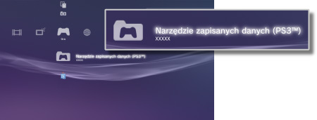

Gra > Granie przy użyciu oprogramowania w formacie PlayStation®3 > Używanie zapisanych danych
Używanie zapisanych danych
Dane oprogramowania w formacie PlayStation®3 są zapisywane w pamięci masowej systemu. Dane są wyświetlane w opcji  (Narzędzie zapisanych danych (PS3™)).
(Narzędzie zapisanych danych (PS3™)).

Wskazówki
- Każdy użytkownik osobno zarządza zapisanymi danymi. Jeśli na liście w kategorii
 (Użytkownicy) znajduje się więcej niż jeden użytkownik, elementy wyświetlane w obszarze (Narzędzie zapisanych danych (PS3™)) będą różne w zależności od zalogowanego użytkownika.
(Użytkownicy) znajduje się więcej niż jeden użytkownik, elementy wyświetlane w obszarze (Narzędzie zapisanych danych (PS3™)) będą różne w zależności od zalogowanego użytkownika. - Po wybraniu ikony zapisanych danych i naciśnięciu przycisku
 zostanie wyświetlone menu, przy użyciu którego można posortować zapisane dane według dat aktualizacji lub pogrupować je według tytułów.
zostanie wyświetlone menu, przy użyciu którego można posortować zapisane dane według dat aktualizacji lub pogrupować je według tytułów.
Przechowywanie zapisanych danych na serwerze PSNSM
Dane oprogramowania w formacie PlayStation®3 można zapisać na serwerze PSNSM i pobrać je za pomocą innego systemu PlayStation®3, aby umożliwić kontynuowanie gry. Aby używać tej funkcji, należy mieć konto w sieci Sony Entertainment Network oraz być subskrybentem usługi PlayStation®Plus.
Automatyczne przechowywanie zapisanych danych
Nowe i ostatnio zaktualizowane zapisane dane można automatycznie umieszczać na dysku internetowym w regularnych odstępach czasu.
Funkcję tę należy ustawić oddzielnie dla każdej gry.
1. |
W obszarze |
|---|---|
2. |
Wybierz opcję [Automatyczne przesyłanie zapisanych danych] i ustaw ją na wartość [Wł.]. |
 (Gra) wybierz grę z zapisanymi danymi, które chcesz zachować, i naciśnij przycisk
(Gra) wybierz grę z zapisanymi danymi, które chcesz zachować, i naciśnij przyciskWskazówki
- Zapisane dane, które są aktualizowane po włączeniu ustawienia, zostaną przesłane automatycznie.
- W obszarze
 (Ustawienia) wybierz ustawienie [Wył.] w opcji
(Ustawienia) wybierz ustawienie [Wył.] w opcji  (Ustawienia systemu) > [Automatyczna aktualizacja], aby wyłączyć automatyczną aktualizację zapisanych danych.
(Ustawienia systemu) > [Automatyczna aktualizacja], aby wyłączyć automatyczną aktualizację zapisanych danych.
Ręczne przechowywanie zapisanych danych
1. |
Wybierz kolejno |
|---|---|
2. |
Wybierz opcję [Kopiuj]. |
3. |
Wybierz [Dysk internetowy] jako lokalizację docelową. |
Pobieranie zapisanych danych z dysku internetowego do systemu PS3™
1. |
Wybierz kolejno |
|---|---|
2. |
Wybierz zapisane dane, które chcesz pobrać, a następnie naciśnij przycisk |
3. |
Wybierz opcję [Kopiuj]. |
Wskazówki
- Maksymalna dostępna pojemność pamięci to 1 GB, natomiast maksymalna liczba elementów danych, które można zapisać, to 1000.
- Nie można przechowywać zapisanych danych oprogramowania, które nie są w formacie PlayStation®3, PC Engine ani NEOGEO.
- Obsługa zapisanych danych zabezpieczonych przed kopiowaniem wygląda następująco:
- - Przesyłanie na dysk internetowy: można to zrobić w dowolnym czasie.
- - Pobieranie zapisanych danych z dysku internetowego: po przesłaniu zapisanych danych zabezpieczonych przed kopiowaniem na dysk internetowy lub pobraniu ich z niego należy odczekać co najmniej 24 godziny przed ponownym pobraniem tych samych danych.
- W przypadku niektórych gier nie można korzystać z dysku internetowego. Szczegółowe informacje na temat gier lub usług, które nie obsługują dysku internetowego można uzyskać tutaj.